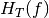
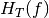

fs : sampling frequency
fc : center frequency
beta : scale factor
System Message: WARNING/2 ($�eta$)
latex exited with error
[stdout]
This is pdfTeX, Version 3.1415926-2.5-1.40.14 (TeX Live 2013/Debian)
restricted \write18 enabled.
entering extended mode
(./math.tex
LaTeX2e <2011/06/27>
Babel <3.9h> and hyphenation patterns for 78 languages loaded.
(/usr/share/texlive/texmf-dist/tex/latex/base/article.cls
Document Class: article 2007/10/19 v1.4h Standard LaTeX document class
(/usr/share/texlive/texmf-dist/tex/latex/base/size12.clo))
(/usr/share/texlive/texmf-dist/tex/latex/base/inputenc.sty
(/home/uguen/texmf/tex/latex/ucs/utf8x.def))
(/home/uguen/texmf/tex/latex/ucs/ucs.sty
(/home/uguen/texmf/tex/latex/ucs/data/uni-global.def))
(/usr/share/texlive/texmf-dist/tex/latex/amsmath/amsmath.sty
For additional information on amsmath, use the `?’ option.
(/usr/share/texlive/texmf-dist/tex/latex/amsmath/amstext.sty
(/usr/share/texlive/texmf-dist/tex/latex/amsmath/amsgen.sty))
(/usr/share/texlive/texmf-dist/tex/latex/amsmath/amsbsy.sty)
(/usr/share/texlive/texmf-dist/tex/latex/amsmath/amsopn.sty))
(/usr/share/texlive/texmf-dist/tex/latex/amscls/amsthm.sty)
(/usr/share/texlive/texmf-dist/tex/latex/amsfonts/amssymb.sty
(/usr/share/texlive/texmf-dist/tex/latex/amsfonts/amsfonts.sty))
(/usr/share/texlive/texmf-dist/tex/latex/tools/bm.sty)
No file math.aux.
(/home/uguen/texmf/tex/latex/ucs/ucsencs.def)
(/usr/share/texlive/texmf-dist/tex/latex/amsfonts/umsa.fd)
(/usr/share/texlive/texmf-dist/tex/latex/amsfonts/umsb.fd)
! Package inputenc Error: Keyboard character used is undefined
(inputenc) in inputencoding `utf8x’.
See the inputenc package documentation for explanation.
Type H <return> for immediate help.
...
l.12 $$^^H
eta$$
[1] (./math.aux) )
(see the transcript file for additional information)
Output written on math.dvi (1 page, 212 bytes).
Transcript written on math.log.
Tns : time integration in nanoseconds
BGHz : Bandwidth in GHz
pfa : false alarm probability
wt : filter B ripple
R : Resistance for Tension/Power conversion
NF : Noise factor in dB (default 0dB)
gpass: gain in the pass band :
gstop : gain in the stop band
|

 
